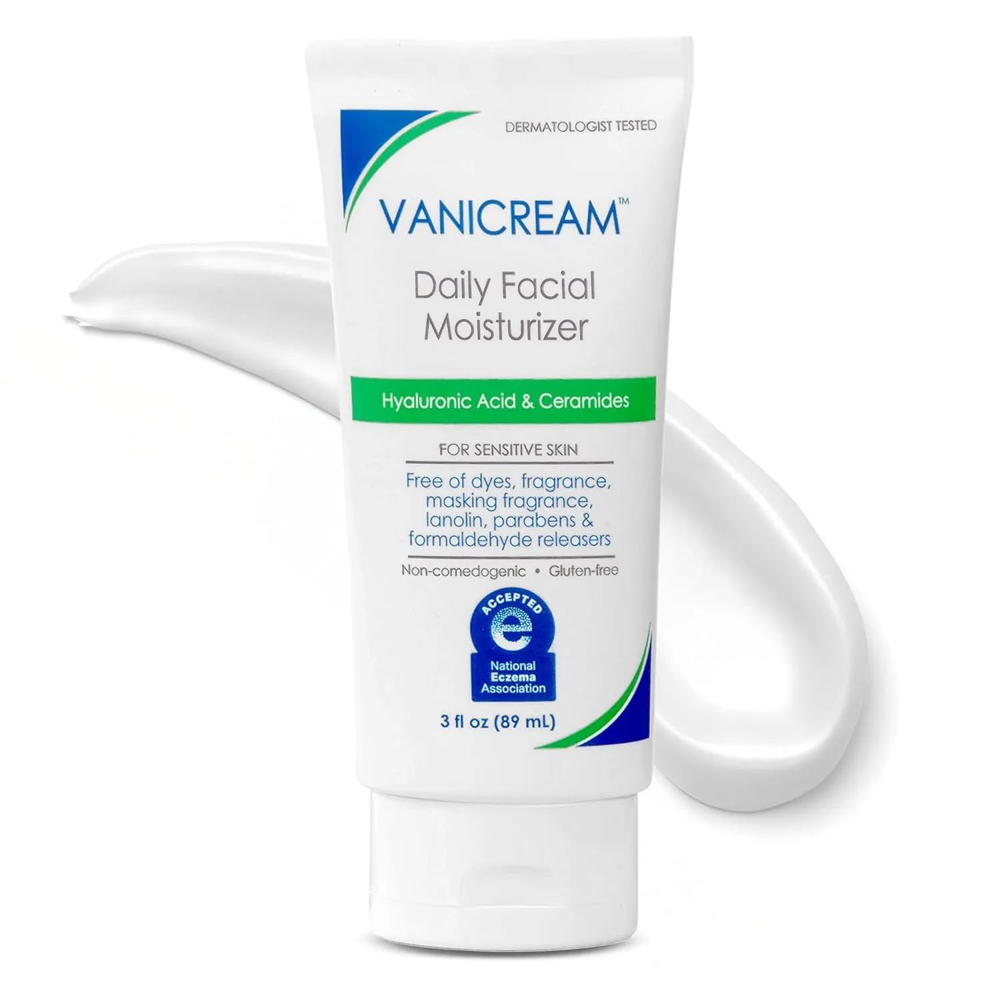
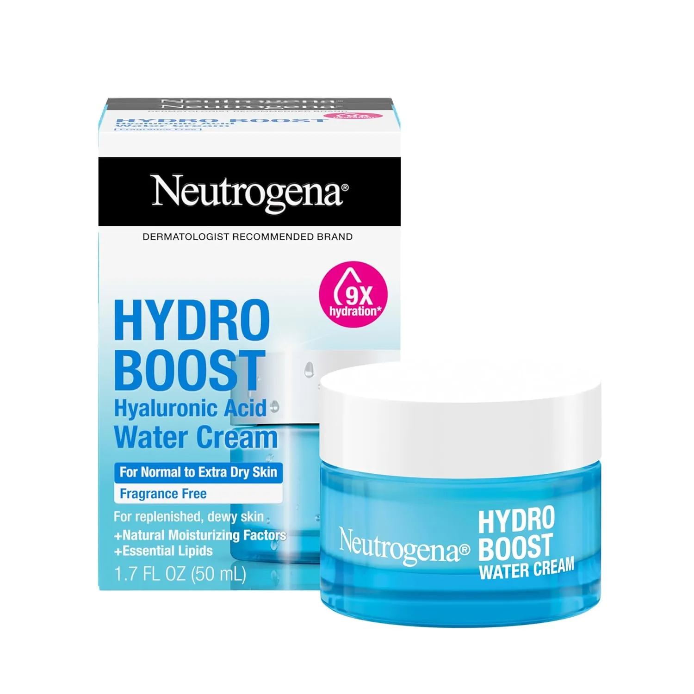
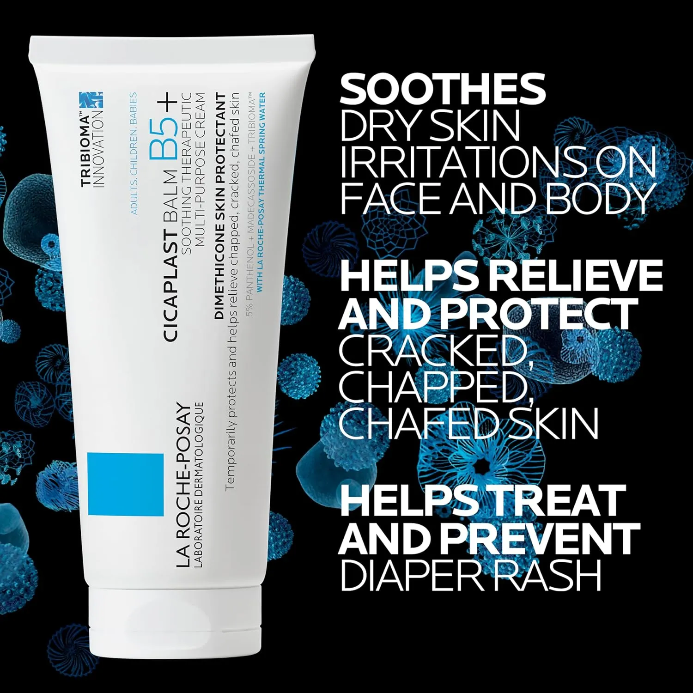
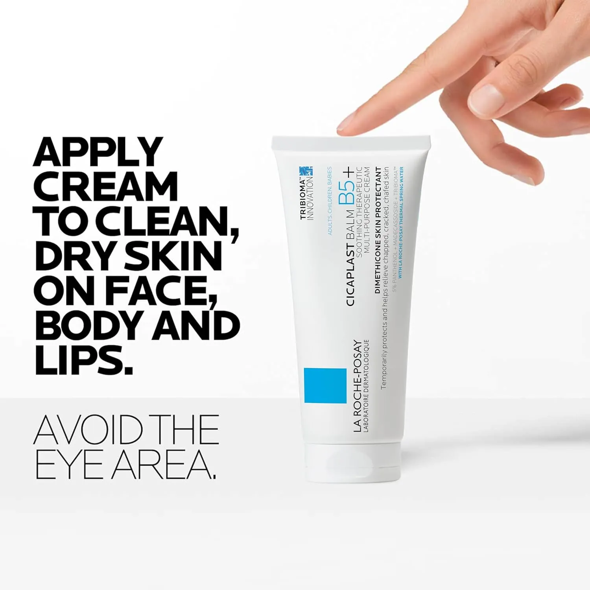
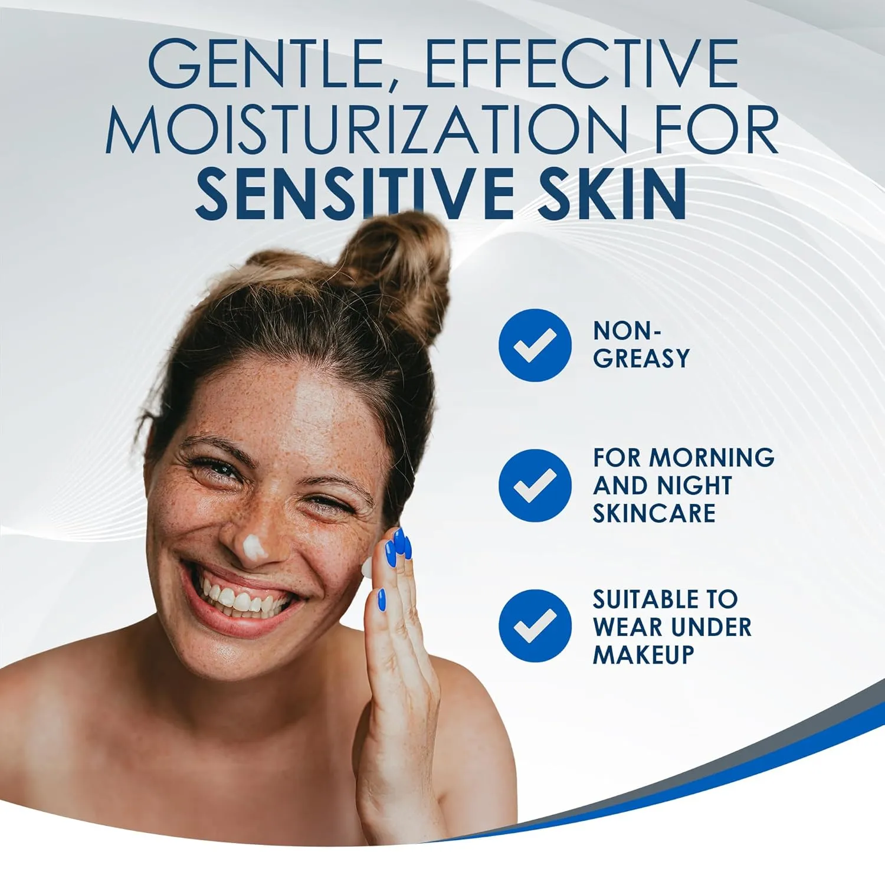
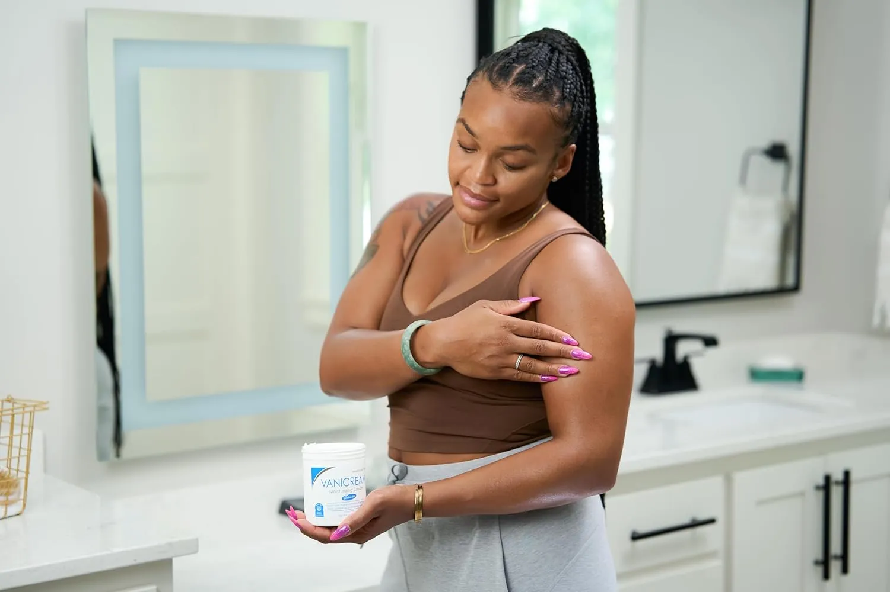
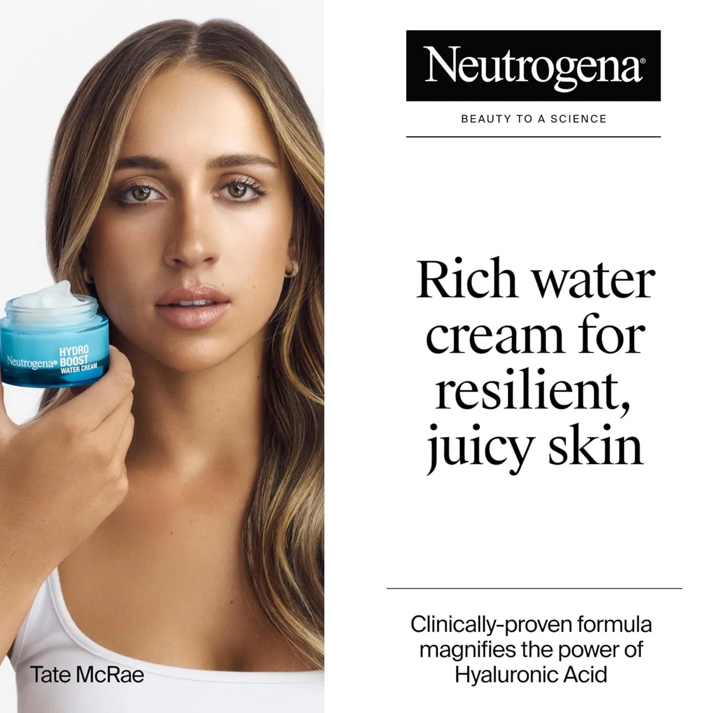
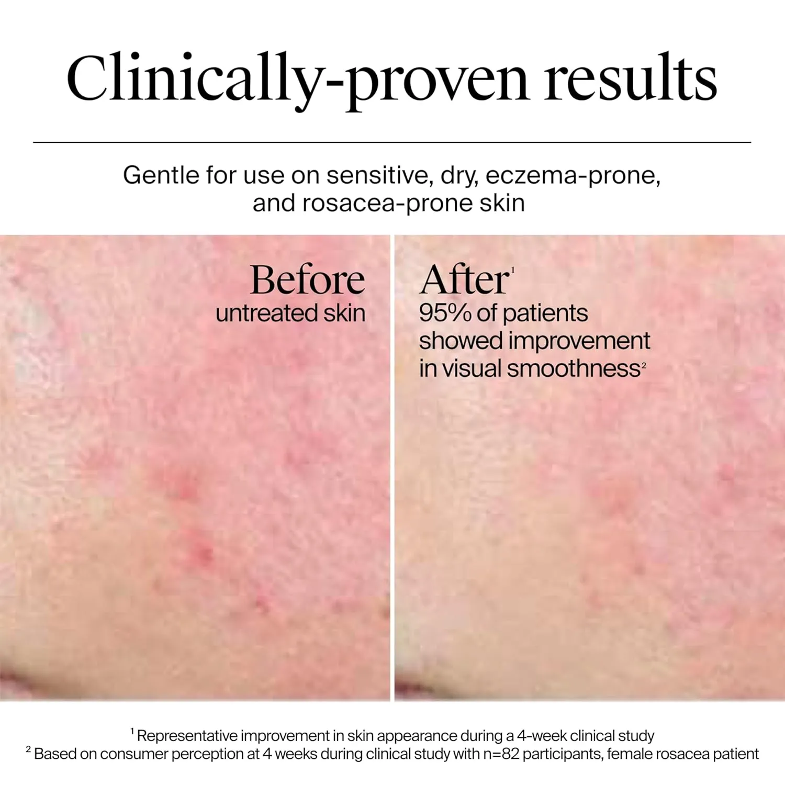

Why Your Skin Feels Dry Again So Quickly
You moisturize. Your skin feels better for an hour. Then the tightness comes back like nothing happened.
That is why dry skin can feel so frustrating. The problem is not always that you need “more moisturizer.” A lot of the time, your skin barrier is struggling to hold onto the moisture you already gave it.
When the barrier is stressed, water escapes faster, products can sting more easily, and dry patches keep returning in the same places. The fix is not a complicated 12-step routine. It is a calmer routine that hydrates, repairs, and protects.
Signs your barrier needs support
- Your skin feels tight soon after washing.
- Moisturizer helps, but not for long.
- Dry patches keep returning around the same areas.
- Your skin looks rough, dull, or flaky even when you moisturize.
- Some products suddenly sting or feel uncomfortable.
The barrier-first way to think about dry skin
Your skin barrier is the outer layer that helps keep good things in and irritating things out. When it is balanced, skin feels smoother and more comfortable. When it is stressed, moisture leaves faster and your skin starts acting sensitive, rough, or flaky.
That is why the smartest dry skin routine usually has four jobs: hydrate the skin, repair the barrier, seal weak spots, and avoid anything too harsh while the skin calms down.
Use lightweight moisture where skin feels dehydrated or tight.
Bring in barrier-friendly creams when skin feels irritated or rough.
Protect cracked or extra-dry spots so moisture does not escape fast.
Give your skin fewer chances to react while it gets comfortable again.
The 4 dry skin picks in this routine
Each product below has a different job. The goal is not to use everything everywhere. The goal is to choose the right texture for the exact dry skin problem you are trying to fix.
 Anchor Pick • 4.95
Anchor Pick • 4.95
Aquaphor Healing Balm Stick
For targeted dry spots, lips, hands, elbows, and areas that need portable protection.
 Barrier Balm • 4.7
Barrier Balm • 4.7
La Roche-Posay Cicaplast Balm B5
For irritated, uncomfortable, barrier-stressed skin that needs a calming balm texture.

Sensitive Skin • 4.7Vanicream Moisturizing Skin Cream
For sensitive, itchy, cracked, or easily reactive dry skin that needs a simple cream.

Hydration Cream • 4.7Neutrogena Hydro Boost Water Cream
For normal to extra-dry skin that wants hydration without a heavy greasy feel.


Aquaphor Healing Balm Stick
This is the practical pick for dry skin that shows up in specific places: around the lips, hands, cuticles, elbows, heels, or small rough patches that need protection during the day.
Its biggest advantage is convenience. A balm stick is easier to carry, easier to apply without mess, and easier to use repeatedly before dry spots turn painful or cracked.
Merchant take: This is the most useful “keep it with you” product in the routine. It does not replace a face cream, but it is excellent for sealing and protecting the dry spots that need extra help.


La Roche-Posay Cicaplast Balm B5
This is the balm-style option for skin that feels uncomfortable, stressed, irritated, or overworked. It is the product you consider when your skin needs a calmer, more cushioned layer instead of a lightweight moisturizer.
With Centella Asiatica, shea butter, and panthenol in the product positioning, it fits the “repair and comfort” part of a dry skin routine.
Review-style highlight: This is the “calm it down” pick. It makes sense when dry skin feels more irritated than simply dehydrated.


Vanicream Moisturizing Skin Cream
Vanicream is the simple, steady option for dry skin that does not like drama. If your skin gets red, itchy, cracked, or easily annoyed by fragranced products, this is the kind of cream that fits a calmer routine.
It is especially useful when the goal is consistency: apply, repeat, and let the skin feel supported without making the routine complicated.
Review-style highlight: This is the dependable pick. Not flashy, not complicated — just a strong fit for people who want fewer irritation risks.


Neutrogena Hydro Boost Water Cream
This is the hydration-focused option for skin that wants moisture but does not want a heavy, greasy finish. It fits the “hydrate first” part of the routine, especially when skin feels tight or dehydrated.
It makes the most sense for normal to extra-dry skin that needs a smoother daily cream texture before adding heavier protection only where needed.
Review-style highlight: This is the lighter hydration pick. Choose it when your skin feels thirsty but you dislike thick creams all over the face.
How to choose between the 4
You do not need all four products to fix dry skin. Choose based on what your skin is actually doing.
Choose Aquaphor Balm Stick if your problem is small dry spots, lips, hands, or areas that need quick protection during the day.
Choose Cicaplast Balm B5 if your skin feels irritated, uncomfortable, or barrier-stressed and needs a richer balm.
Choose Vanicream if your skin is sensitive, itchy, cracked, or easily reacts to complicated formulas.
Choose Neutrogena Water Cream if your skin feels dehydrated and tight but you prefer a lighter daily cream.
Simple AM / PM routine example
Keep it simple for at least a few days. The goal is to make your skin feel calmer, not overwhelm it.
Morning
- Cleanse gently or rinse with lukewarm water.
- Apply a hydration cream if your face feels tight.
- Use a small amount of balm on dry spots only.
- Finish with sunscreen if you are going outside.
Night
- Cleanse without scrubbing or hot water.
- Apply your main moisturizer or barrier balm.
- Seal cracked or rough areas with a balm stick.
- Pause harsh exfoliants if your skin feels irritated.
FAQ
Is dry skin always a moisturizer problem?
No. Dry skin can come from weather, hot water, over-cleansing, harsh actives, or a stressed barrier that loses moisture too quickly.
Should I exfoliate flaky dry skin?
Be careful. If your skin is irritated or stinging, exfoliating can make things worse. Calm the barrier first, then decide later.
Which product is best for cracked spots?
For small cracked or rough spots, the Aquaphor Balm Stick is the easiest targeted option. For larger sensitive areas, Vanicream or Cicaplast may make more sense.
What is the smartest first step?
Simplify the routine. Stop anything that leaves your skin tight or stinging, then add hydration, barrier support, and protection where needed.
Help your skin hold moisture again.
Dry skin usually improves when the routine becomes calmer: hydrate first, repair the barrier, and protect the weak spots that keep drying out.